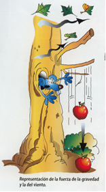
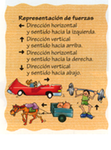
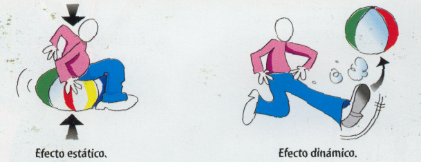

Fuerzas

En la naturaleza hay muchas fuerzas:
- la de la gravedad, que nos atrae hacia la tierra y origina el peso
- la del viento
- las mecánicas, que mueven las máquinas
- la de los gases encerrados en un recipiente
- la que desarrollan nuestros músculos
- las originadas por efecto del calor...
Estamos acostumbrados a que las fuerzas actúen sobre nosotros y a utilizarlas, pero ¿qué es una fuerza? ¿Cómo podemos definirla?
EXPERIMENTA
-
Empuja tu cuaderno con un dedo.
-
Di a un compañero que sujete el cuaderno mientras lo empujas.
-
Aplasta con un dedo tu goma de borrar.
-
Lanza a la vez la goma y el lápiz para hacerlos chocar sobre la mesa.
a. ¿Se mueve el cuaderno cuando lo empujas?
b. ¿Qué sucede cuando tu compañero sujeta el cuaderno mientras tú lo estás empujando?
c. ¿Qué le ocurre a la goma de borrar cuando la aplastas?
d. ¿Qué sucede cuando chocan la goma y el lápiz?

En el primer caso, tu fuerza provoca el desplazamiento del cuaderno. En el segundo, la intervención de otra fuerza contrarresta la tuya e impide o entorpece el movimiento del cuaderno. Al aplastar la goma, el efecto de la fuerza es un cambio de forma. Al chocar, el lápiz y la goma cambian la dirección de su desplazamiento.
Con estos ejemplos podemos descubrir una relación entre las fuerzas y el movimiento o deformación (cambio de forma de un cuerpo) de los cuerpos. Siempre que se ejerce una fuerza, se produce uno de esos dos fenómenos (o ambos a la vez); por tanto, podemos definir la fuerza de la siguiente forma:
Fuerza
Una fuerza es todo aquello capaz de deformar un cuerpo (efecto estático) o alterar su estado de movimiento o reposo (efecto dinámico).

Cargas
Las fuerzas que actúan sobre una estructura artificial son conocidas como cargas. Así nos referimos a la carga del viento, la carga de las personas, la carga de la nieve...